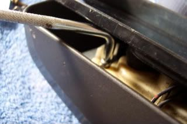
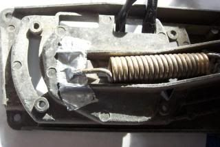
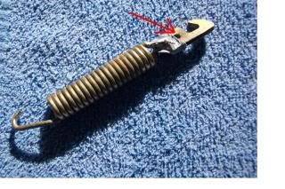

-
Anyone know how to remove the side mirror housing?
I have a good mirror with broken outer shell and another with a broken mirror glass.
Last time I tried to pull the cover off I broke it.
1988 300ZX Turbo, Shiro Special #760
1988 300ZX Turbo Automatic (wife's car)
1991 Hard-body 2WD
http://zccw.org/zccw/?page_id=1215 -
Use a thin scraper to pry the glass from the tilting mechanism.
Its stuck on with a white sticky adhesive that stays soft.
If you fold the mirror inward about an inch and a half you will see a spring with
a hook on the end. At the point the spring exits the housing are some molded
stubs to insert a guide rod so the hook stays extended. A bent screwdriver
will work and not get interference from the door.
Pry the hook from the point its hooked too.
The hook snaps back into the mirror housing with violent force, so watch your fingers!
Remove the screws that secure the tilt mechanism to the mirror housing and the
4 screws pictured above.
Remove the inner door panel and mirror trim and unplug the tilt mechanism (and heater if equipped)
and feed the wires out.
I have no clue on how to get the spring and hook back out though. It looks like a real pain in the ass.
84 AE/Shiro #683/Shiro #820/84 Turbo -
WOW, great pictures, I'll try that.
1988 300ZX Turbo, Shiro Special #760
1988 300ZX Turbo Automatic (wife's car)
1991 Hard-body 2WD
http://zccw.org/zccw/?page_id=1215 -
I've rebuilt my mirrors and the design is.... simply irresponsible on Nissan's part. I hate it. Had to have my body-builder roommate put the spring back on. What were they thinking???
1985 Nissan 300ZX 2+2- My first Z, back in the family
1987 Nissan 300ZX Turbo RIP 4/87 - 4/28/2011
Under Construction: 1986 Nissan 300ZX NA2T Slicktop
Originally posted by Tempestas -
I removed them and went with something totally original. so much less of a headace.
he gives me shit all the time about the money i spend on my car but he simply doenst understand what type of "high" you get from watching a stock car transform into something alive with as much emotion and feelings as any human.Originally posted by PurePontiacKid -
Linky: http://zhome.com/ZCMnL/84HowTo/300ZXMirrorRepair1.html
Off set screw driver comes in handy here.

Putting it back together is the fun part.
I used tape to hold the spring in place and to make sure it did not wobble around on me.

Holding the hook that is on the spring while you close the cover is a little tricky. I used a small pick tool to hold it in place.
Note the hole before the hook.

Once you have the hook lined up while closing the housing. Pull out the small screwdriver or pick tool and it will snap into place.
( no pic because you need like three hands for this procedure :-? )Selling left over z31 parts from an 85. -
5C216756-475F-499D-B09D-71A775393CAB.jpegF94A68F9-3121-4CDA-B305-F8BAC3E4800A.jpegB4E2DB73-6BAE-44B1-95BD-C72F33CFB79C.jpegF640E0A8-D8C6-40E9-AD67-A399082A1A6F.jpeg Zombie thread revival… I know. But this might help someone. Just took mine apart while keeping the tension on the spring. I used a heavy wire under the hook to hold the hook out. The clamshell will unbolt with the spring still installed. The mirror motor does have to come out though. 9F59E64A-BAAF-4B68-8215-A5AFB2E4E1B4.jpeg--------------
Legal stuff:
**Nissan Employee**
Any information shared is simply my own opinion and NOT the opinion of Nissan
not legal stuff:
'88 300ZX 2+2-- driving… just details left
'22 Q60RS-- I tell the wife it's hers…
'87 Chaparral bowrider-- the next project
'00 Corolla-- kids car.
'14 E-350-- Gotta haul those kids in something.

Copyright © 2006–. All rights reserved. Privacy Policy
Comment